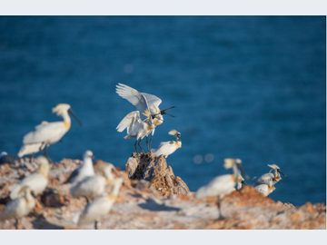
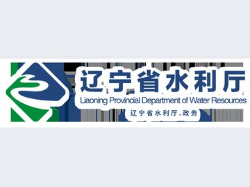

03
适配 精准 共生 金融业不断提升服务实体经济质效
金融是实体经济的血脉，服务实体经济是金融业的使命。近年来，伴随我国产业结构转型升级，新质生产力不断培育壮大。

新华社北京10月23日电 国务院总理李强10月23日主持召开国务院常务会议，研究统筹人口与经济社会发展有关工作，听取推进全国服务业大会部署落实情况汇报。
新华社北京10月23日电（记者任军、吴雨）中国人民银行10月23日发布公告称，为保持银行体系流动性充裕，将于10月26日以固定数量、利率招标…
金融是实体经济的血脉，服务实体经济是金融业的使命。近年来，伴随我国产业结构转型升级，新质生产力不断培育壮大。
10月23日，人民银行深圳市分行、国家外汇管理局深圳市分局召开2026年三季度新闻发布会，记者从现场了解到，今年以来，深圳落实适度宽松货币政策…

另一方面，平安银行三季度净息差再度承压。报告显示，该行三季度单季净息差降为1.79%，较二季度回落2BP，结束此前一个季度的环比回升。
科技贷款余额超6.7万亿元、同比增长17%；“险资入粤”累计投资2.7万亿元，支持超800家科技企业；保险业为科技活动提供风险保障1.27万亿元；

巨轮刚靠泊，班列已待发。在大连港矿石码头，来自西非几内亚西芒杜矿区的铁矿石，经临港加工区“破碎+筛分”后，直接装上铁路货车，发往鞍钢等东北钢铁企业。
①建设单位联系人：管总：13104219909；②信函地址：辽宁省建平县青峰山镇西大杖子村；③电子邮件：610748612@qq.com。

近日，第四届中国非物质文化遗产保护年会在辽宁省朝阳市隆重举办。鞍山市省级非物质文化遗产代表性项目——岫岩玉雕、海城牛庄馅饼制作技艺亮相年会“五好非遗大集”…

检查组踏勘海城市 2025年第二批中央水库移民扶持项目现场，查阅工程档案、安全生产、质量监督等相关资料，听取项目负责人汇报项目进展…

23资金面总体呈现均衡偏松态势，Shibor短端品种小幅走高，中长端品种小幅回落。存单二级市场交投活跃，成交收益率窄幅震荡。